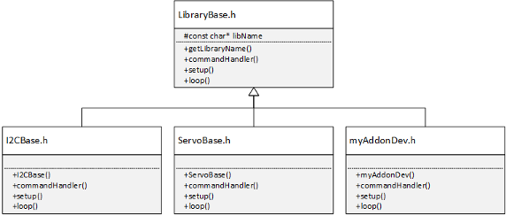

The C++ header requires several properties and methods that must be overridden from the base class:
Note: Use only ASCII characters for file include path, C++ class name, and variables. |
The LibraryBase class provides
all the necessary functionality for executing the code from the MATLAB Add-On Class. At the beginning of
the file C++ header file, you must include the LibraryBase.h library:
#include "LibraryBase.h"
You can include additional libraries following LibraryBase.h.
Typically, these libraries are third-party Arduino® libraries
for your Arduino hardware that provide direct access to specific
functionality.
Your base add-on class C++ header must extend the LibraryBase class:
class MyAddon : public LibraryBase {
...
}Extending the LibraryBase.h class provides
access to the appropriate methods and properties. The following diagram
shows the typical method inheritance for an add-on:

The add-on constructor defines the name of your add-on library
and registers the library with the main Arduino program. Your
add-on class must override the default constructor method of the LibraryBase. The constructor uses
the same name as your add-on class and takes a reference to a MWArduinoClass object.
public:
MyAddon(MWArduinoClass& a)
{
libName = "MyAddonPackageFolder/MyAddon";
a.registerLibrary(this);
}
The library name property, libName, must
be the same string defined in the Library Specification of the MATLAB Add-On Class:
<AddonFolderName>/<AddonName>
The add-on library is registered with the general MWArduinoClass object
using the registerLibrary method. For example,
the constructor from the Create HelloWorld Add-On example uses the following constructor:
public:
HelloWorld(MWArduinoClass& a)
{
libName = "ExampleAddon/HelloWorld";
a.registerLibrary(this);
}
The commandHandler method is the entry point
for the commands executed in your MATLAB Add-On Class that were executed by the sendCommand. Your add-on class must
override the default commandHandler method of the LibraryBase class.
public:
void commandHandler(byte cmdID, byte* dataIn, unsigned int payloadSize)
{
switch (cmdID){
case 0x01:{
…
sendResponseMsg(cmdID, val, 13);
break;
}
… // Other cases with appropriate cmdIDs
default:{
// Do nothing
}
}
}
The switch statement uses the command identifiers, cmdID,
to determine the segment of code to execute. The cmdIDs
must match those defined in the MATLAB Add-On Class. At the end of each switch statement,
the commandHandler must call the sendResponseMsg function:
sendResponseMsg(byte commandID, byte* dataOut, unsigned int payloadSize)
The data assigned to the input arguments dataOut,
and payloadSize returned to the output arguments
of the sendCommand function.
Note:
Execution of the |
The commandHandler method from the Create HelloWorld Add-On example shows
how a string, ‘Hello World!', can
be created in the C++ code and returned to the MATLAB Add-On Class through the commandHandler:
public:
void commandHandler(byte cmdID, byte* dataIn, unsigned int payloadSize)
{
switch (cmdID){
case 0x01:{
byte val [13] = "Hello World!";
sendResponseMsg(cmdID, val, 13);
break;
}
default:{
// Do nothing
}
}
}
The setup method can be used to initialize
and set the initial values. Your add-on class can override the default setup method
of the LibraryBase class to
initialize variables. The Create LCD Add-on example overrides the default setup method
to reset the cursor to the first row upon initialization as shown:
public:
void setup()
{
cursorRow=0;
}The loop method can be used to perform certain
repetitive tasks. Your add-on class can override the default loop method
of the LibraryBase class. The Create Ultrasonic Add-On to Continuously Stream Distance Values example
overrides the default loop method to repeatedly
update the array circularArray in definite time
intervals deltaT as shown:
public:
void loop()
{
long now = millis();
// The circular array updates every 100 ms
if(now-lastSampleTime > deltaT)
{
circularArray[i] = mySensor->Ranging(1);
if (circularArrayIx > 9)
{
circularArrayIx = 0;
}
else
++circularArrayIx;
lastSampleTime = millis();
}
}Note:
Do not use any blocking operation in the |
The LibraryBase also
provides a convenient function, debugPrint, to
display messages to the MATLAB® command
line to help in development of your add-on.
The debugPrint function uses the same syntax
as the C++ printf function:
debugPrint(MSG_EXAMPLE_DEBUG);
The debug message must be declared in the C++ header file using the following syntax:
const char MSG_EXAMPLE_DEBUG[] PROGMEM = "This is a debug message.\n";
where the string PROGMEM is the message displayed.
Additional information can be included in the debug message using
format specifiers. To enable debugPrint messages
to be displayed to the MATLAB command
line during run-time, you must set the additional Name-Value property
‘trace' in the arduino function:
The Create HelloWorld Add-On example
prints to the MATLAB command
line a sample debug message with the last commandID that
was included using a format specifier:
const char MSG_EXAMPLE_DEBUG[] PROGMEM = "Example debug message: cmdID %d\n"; ... debugPrint(MSG_EXAMPLE_DEBUG, cmdID);